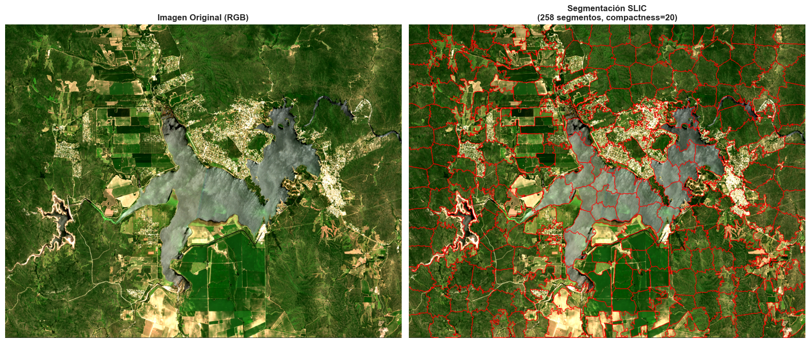
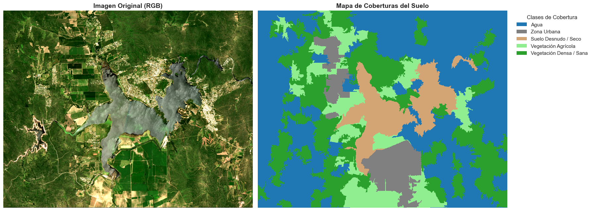

Este proyecto implementa un pipeline completo de análisis geoespacial para la clasificación automática de coberturas del suelo utilizando imágenes satelitales Sentinel-2. La metodología combina técnicas de segmentación de imágenes (SLIC) con algoritmos de machine learning no supervisado (K-Means y Gaussian Mixture Models) para generar mapas de cobertura del suelo de alta precisión.
Objetivos: - Desarrollar un sistema automatizado de clasificación de coberturas del suelo - Comparar diferentes técnicas de segmentación y clustering - Generar mapas temáticos interpretables para análisis territorial - Evaluar la separabilidad espectral de diferentes clases de cobertura
Resultados Clave: - Clasificación exitosa en 5-7 clases principales (agua, vegetación, suelo desnudo, zonas urbanas) - Implementación de múltiples algoritmos con evaluación comparativa - Exportación de resultados en formatos GIS estándar para integración con herramientas profesionales
1. Contexto y Problema
1.1 Motivación
La clasificación de cobertura del suelo es fundamental para múltiples aplicaciones: - Planificación urbana y territorial: Identificación de áreas urbanas, agrícolas y naturales - Monitoreo ambiental: Seguimiento de cambios en vegetación, cuerpos de agua y uso del suelo - Agricultura de precisión: Delimitación de parcelas y tipos de cultivo - Gestión de recursos hídricos: Identificación y monitoreo de cuerpos de agua
1.2 Desafío Técnico
Las imágenes satelitales contienen información espectral rica pero requieren procesamiento avanzado para extraer información semántica útil. Los desafíos principales incluyen:
Variabilidad espectral: Múltiples objetos pueden tener firmas espectrales similares
Ruido y variabilidad espacial: Necesidad de agrupar píxeles similares espacialmente
Escalabilidad: Procesamiento eficiente de imágenes de alta resolución
Interpretabilidad: Generar resultados que puedan ser validados y utilizados por expertos
1.3 Enfoque Propuesto
Este proyecto implementa una metodología híbrida que combina: 1. Segmentación de imágenes para agrupar píxeles espacialmente coherentes 2. Machine Learning no supervisado para identificar patrones espectrales 3. Análisis espectral para validar y asignar clases semánticas 4. Visualización geoespacial para presentar resultados interpretables
# ============================================================================# CONFIGURACIÓN E IMPORTS# ============================================================================# Librerías para procesamiento de datos geoespacialesimport rasteriofrom rasterio.crs import CRSfrom rasterio.warp import calculate_default_transform, reproject, Resamplingimport os# Librerías para procesamiento de imágenes y segmentaciónimport numpy as npfrom skimage.segmentation import slic, mark_boundariesimport matplotlib.pyplot as pltfrom scipy import ndimageimport cv2# Librerías para machine learningfrom sklearn.cluster import KMeansfrom sklearn.mixture import GaussianMixturefrom sklearn.preprocessing import StandardScaler# Librerías para análisis de datosimport pandas as pd# Librerías para visualizaciónfrom matplotlib.colors import ListedColormap# Configuración de visualizaciónplt.style.use('seaborn-v0_8-darkgrid')%matplotlib inlineprint("✅ Todas las librerías importadas correctamente")
✅ Todas las librerías importadas correctamente
2. Datos
2.1 Fuente de Datos
Utilizamos imágenes satelitales Sentinel-2 del programa Copernicus de la Agencia Espacial Europea (ESA). Sentinel-2 captura imágenes en 13 bandas espectrales con resolución espacial de 10m, 20m y 60m.
Características de los datos: - Sensor: Sentinel-2 MSI (MultiSpectral Instrument) - Resolución espacial: 20m (bandas resampleadas) - Bandas utilizadas: B2 (Azul), B3 (Verde), B4 (Rojo), B5, B6, B7, B8A (NIR), B11 (SWIR1), B12 (SWIR2) - Formato: GeoTIFF con proyección UTM - Área de estudio: Región de Córdoba, Argentina
# ============================================================================# CONFIGURACIÓN DE RUTAS Y CARPETAS# ============================================================================# Definir rutas (ajustar según tu entorno)carpeta_datos =r"C:\Users\Brenda\Documents\IA_Geodata_Practico11"carpeta_salidas =r"C:\Users\Brenda\Documents\IA_Geodata_Practico11"# Crear carpeta de salidas si no existeos.makedirs(carpeta_salidas, exist_ok=True)print(f"📁 Carpeta de datos: {carpeta_datos}")print(f"📁 Carpeta de salidas: {carpeta_salidas}")print(f"✅ Configuración de rutas completada")
📁 Carpeta de datos: C:\Users\Brenda\Documents\IA_Geodata_Practico11
📁 Carpeta de salidas: C:\Users\Brenda\Documents\IA_Geodata_Practico11
✅ Configuración de rutas completada
# ============================================================================# CARGA DE DATOS# ============================================================================# Cargar imagen Sentinel-2archivo_imagen ='T20HLK_20240127T195552_20m_aoi.tif'ruta_imagen = os.path.join(carpeta_datos, archivo_imagen)print(f"📥 Cargando imagen: {archivo_imagen}")with rasterio.open(ruta_imagen) as src: stack = src.read() # Array numpy: (bandas, filas, columnas) metadata = src.meta.copy() # Metadatos geográficos (CRS, transform, etc.)# Información de la imagenn_bandas, altura, ancho = stack.shapeprint(f"\n✅ Imagen cargada exitosamente")print(f" Dimensiones: {n_bandas} bandas × {altura} filas × {ancho} columnas")print(f" Resolución espacial: {metadata['transform'][0]:.1f}m")print(f" Sistema de coordenadas: {metadata['crs']}")print(f" Tipo de datos: {metadata['dtype']}")# Visualizar estadísticas básicasprint(f"\n📊 Estadísticas por banda:")for i inrange(n_bandas): banda = stack[i]print(f" Banda {i+1}: min={banda.min():.0f}, max={banda.max():.0f}, media={banda.mean():.1f}")
📥 Cargando imagen: T20HLK_20240127T195552_20m_aoi.tif
✅ Imagen cargada exitosamente
Dimensiones: 9 bandas × 958 filas × 1209 columnas
Resolución espacial: 20.0m
Sistema de coordenadas: EPSG:32720
Tipo de datos: uint16
📊 Estadísticas por banda:
Banda 1: min=0, max=11950, media=1354.7
Banda 2: min=0, max=12133, media=1594.8
Banda 3: min=0, max=13281, media=1516.1
Banda 4: min=0, max=15297, media=1941.9
Banda 5: min=0, max=14092, media=3134.9
Banda 6: min=0, max=16641, media=3515.1
Banda 7: min=0, max=14644, media=3729.3
Banda 8: min=0, max=14416, media=2893.7
Banda 9: min=0, max=14981, media=2133.9
2.2 Visualización de la Imagen Original
A continuación visualizamos la imagen en composición RGB (bandas 4, 3, 2 correspondientes a Rojo, Verde, Azul) para tener una referencia visual del área de estudio.
Preprocesamiento: Normalización y preparación de bandas espectrales
Segmentación: Agrupación de píxeles espacialmente coherentes usando SLIC
Extracción de características: Cálculo de estadísticas espectrales por segmento
Clustering: Aplicación de algoritmos no supervisados (K-Means, GMM)
Análisis espectral: Validación mediante firmas espectrales
Post-procesamiento: Asignación de clases semánticas y generación de mapas
3.2 Algoritmos Utilizados
Segmentación SLIC (Simple Linear Iterative Clustering) - Agrupa píxeles en “superpíxeles” espacialmente coherentes - Reduce la dimensionalidad del problema (de ~1M píxeles a ~300 segmentos) - Preserva bordes y estructuras espaciales
K-Means Clustering - Algoritmo de clustering particional - Rápido y eficiente para grandes volúmenes de datos - Requiere especificar el número de clusters (k)
Gaussian Mixture Models (GMM) - Modela distribuciones de probabilidad para cada clase - Permite asignaciones probabilísticas (más flexible que K-Means) - Mejor para capturar transiciones graduales entre clases
4. Análisis y Resultados
4.1 Segmentación de Imágenes
El primer paso es agrupar píxeles espacialmente cercanos y espectralmente similares en “superpíxeles” o segmentos. Esto reduce el ruido y mejora la coherencia espacial de la clasificación final.
4.1.1 Segmentación SLIC - Configuración Base
Aplicamos el algoritmo SLIC con parámetros iniciales para crear una segmentación base del área de estudio.
# ============================================================================# SEGMENTACIÓN SLIC - CONFIGURACIÓN BASE# ============================================================================# Preparar imagen RGB normalizada para segmentación# Usamos la imagen RGB ya normalizada de la celda anteriorrgb_scaled = rgb_normalized.copy()# Parámetros de segmentación SLICn_segments =300# Número aproximado de segmentos deseadoscompactness =20# Balance entre regularidad espacial y adherencia a bordes# Valores más altos = segmentos más regulares (cuadrados)# Valores más bajos = segmentos más adaptados a bordesprint(f"🔄 Aplicando segmentación SLIC...")print(f" Parámetros: n_segments={n_segments}, compactness={compactness}")# Aplicar algoritmo SLICsegmentos = slic( rgb_scaled, n_segments=n_segments, compactness=compactness, start_label=1, # Etiquetas empiezan en 1 sigma=1.0, # Suavizado previo (opcional) slic_zero=False# Usar SLIC estándar)n_segmentos_obtenidos = segmentos.max()print(f"✅ Segmentación completada: {n_segmentos_obtenidos} segmentos generados")
# ============================================================================# VISUALIZACIÓN DE SEGMENTOS# ============================================================================fig, axes = plt.subplots(1, 2, figsize=(16, 8))# Imagen originalaxes[0].imshow(rgb_scaled)axes[0].set_title('Imagen Original (RGB)', fontsize=12, fontweight='bold')axes[0].axis('off')# Segmentos con bordes marcadosaxes[1].imshow(mark_boundaries(rgb_scaled, segmentos, color=(1, 0, 0), mode='thick'))axes[1].set_title(f'Segmentación SLIC\n({n_segmentos_obtenidos} segmentos, compactness={compactness})', fontsize=12, fontweight='bold')axes[1].axis('off')plt.tight_layout()plt.show()print("📊 Visualización: Los bordes rojos muestran los límites entre segmentos")

📊 Visualización: Los bordes rojos muestran los límites entre segmentos
# ============================================================================# EXTRACCIÓN DE CARACTERÍSTICAS ESPECTRALES POR SEGMENTO# ============================================================================# Calcular estadísticas espectrales (media) para cada segmento en todas las bandas# Esto reduce la dimensionalidad: de ~1M píxeles a ~300 segmentosbands, xsize, ysize = stack.shapen_segments = segmentos.max()print(f"📊 Extrayendo características espectrales...")print(f" Píxeles totales: {xsize * ysize:,}")print(f" Segmentos: {n_segments}")print(f" Reducción: {xsize * ysize / n_segments:.0f}x")# Calcular media espectral por segmento para cada bandamedia_por_segmento = np.zeros((n_segments, bands))for b inrange(bands): media_por_segmento[:, b] = ndimage.mean( stack[b], labels=segmentos, index=np.arange(1, n_segments +1) )print(f"✅ Características extraídas: matriz de forma {media_por_segmento.shape}")print(f" (segmentos × bandas espectrales)")
Para seleccionar los mejores parámetros, evaluamos múltiples configuraciones de SLIC comparando métricas de calidad como el número de segmentos, tamaño promedio y variabilidad.
# ============================================================================# FUNCIONES AUXILIARES PARA EVALUACIÓN DE SEGMENTACIÓN# ============================================================================def evaluate_segmentation_quality(segments, rgb_image):""" Evalúa la calidad de una segmentación usando métricas básicas. Parámetros: ----------- segments : array Matriz de segmentos etiquetados rgb_image : array Imagen RGB normalizada Retorna: -------- dict : Diccionario con métricas de calidad """ n_segments = segments.max()# Calcular estadísticas de tamaño de segmentos segment_sizes = np.bincount(segments.flatten()) segment_sizes = segment_sizes[segment_sizes >0] # Remover segmentos vacíos metrics = {'n_segments': n_segments,'avg_size': np.mean(segment_sizes),'std_size': np.std(segment_sizes),'min_size': np.min(segment_sizes),'max_size': np.max(segment_sizes),'size_ratio': np.max(segment_sizes) / np.min(segment_sizes) if np.min(segment_sizes) >0elsefloat('inf') }return metricsdef compare_segmentations(segmentations_dict, rgb_image, title="Comparación de Segmentaciones"):""" Compara múltiples configuraciones de segmentación visual y numéricamente. Parámetros: ----------- segmentations_dict : dict Diccionario {nombre: array_segmentos} rgb_image : array Imagen RGB para visualización title : str Título de la figura """ fig, axes = plt.subplots(2, 3, figsize=(18, 12)) axes = axes.flatten() metrics_summary = {}for i, (name, segments) inenumerate(segmentations_dict.items()):if i >=6: # Máximo 6 visualizacionesbreak# Visualizar segmentación axes[i].imshow(mark_boundaries(rgb_image, segments, color=(1, 0, 0), mode='thick')) axes[i].set_title(f"{name}\n({segments.max()} segmentos)", fontweight='bold') axes[i].axis("off")# Calcular métricas metrics = evaluate_segmentation_quality(segments, rgb_image) metrics_summary[name] = metricsprint(f"\n{'='*50}")print(f"{name.upper()}")print(f"{'='*50}")print(f" Segmentos generados: {metrics['n_segments']}")print(f" Tamaño promedio: {metrics['avg_size']:.1f} píxeles")print(f" Desviación estándar: {metrics['std_size']:.1f}")print(f" Rango: {metrics['min_size']} - {metrics['max_size']} píxeles")print(f" Ratio (max/min): {metrics['size_ratio']:.2f}")# Ocultar ejes vacíosfor i inrange(len(segmentations_dict), 6): axes[i].axis('off') plt.suptitle(title, fontsize=16, fontweight='bold') plt.tight_layout() plt.show()return metrics_summary
# ============================================================================# EVALUACIÓN DE MÚLTIPLES CONFIGURACIONES DE SEGMENTACIÓN# ============================================================================print("🔄 Evaluando diferentes configuraciones de segmentación SLIC...\n")# Configuraciones a evaluarslic_configs = {'Compacto': {'n_segments': 300, 'compactness': 20}, # Menos segmentos, más regular'Balanceado': {'n_segments': 400, 'compactness': 15}, # Balance óptimo'Detallado': {'n_segments': 500, 'compactness': 10}, # Más segmentos, más detalle}slic_segmentations = {}# Generar segmentacionesfor name, config in slic_configs.items(): segments = slic( rgb_scaled, n_segments=config['n_segments'], compactness=config['compactness'], start_label=1, sigma=1.0, slic_zero=False ) slic_segmentations[name] = segmentsprint(f"✅ {name}: {segments.max()} segmentos generados")# Comparar visual y numéricamenteprint("\n"+"="*60)metrics_slic = compare_segmentations( slic_segmentations, rgb_scaled, "Comparación de Configuraciones SLIC")# Seleccionar la mejor configuración (basada en balance)# Para este proyecto, usamos 'Balanceado' que ofrece buen compromisosegmentos = slic_segmentations['Balanceado']n_segmentos_final = segmentos.max()print(f"\n✅ Configuración seleccionada: 'Balanceado' ({n_segmentos_final} segmentos)")# Recalcular media_por_segmento con la segmentación seleccionadaprint(f"\n🔄 Recalculando características espectrales con la segmentación seleccionada...")bands, xsize, ysize = stack.shapemedia_por_segmento = np.zeros((n_segmentos_final, bands))for b inrange(bands): media_por_segmento[:, b] = ndimage.mean( stack[b], labels=segmentos, index=np.arange(1, n_segmentos_final +1) )print(f"✅ Características recalculadas: matriz de forma {media_por_segmento.shape}")print(f" (segmentos × bandas espectrales)")
✅ Configuración seleccionada: 'Balanceado' (329 segmentos)
🔄 Recalculando características espectrales con la segmentación seleccionada...
✅ Características recalculadas: matriz de forma (329, 9)
(segmentos × bandas espectrales)
4.2 Clasificación No Supervisada
Una vez segmentada la imagen, aplicamos algoritmos de clustering para agrupar segmentos con características espectrales similares. Esto nos permite identificar diferentes tipos de cobertura del suelo sin necesidad de datos de entrenamiento etiquetados.
4.2.1 Determinación del Número Óptimo de Clusters
Antes de aplicar K-Means, necesitamos determinar cuántos clusters (clases) son apropiados para nuestros datos. Utilizamos el Método del Codo (Elbow Method) para identificar el punto óptimo.
# ============================================================================# MÉTODO DEL CODO PARA DETERMINAR NÚMERO ÓPTIMO DE CLUSTERS# ============================================================================# El método del codo busca el punto donde agregar más clusters no mejora significativamente# la reducción de inercia (suma de distancias al cuadrado dentro de cada cluster)print("🔍 Aplicando método del codo para determinar k óptimo...")# Preparar datos (usar características espectrales de segmentos)X = media_por_segmento# Probar diferentes valores de kk_values =range(2, 11)inertias = []for k in k_values: kmeans = KMeans(n_clusters=k, random_state=42, n_init=10) kmeans.fit(X) inertias.append(kmeans.inertia_)# Visualizar curva del codofig, ax = plt.subplots(figsize=(10, 6))ax.plot(k_values, inertias, 'o-', linewidth=2, markersize=8)ax.set_xlabel('Número de Clusters (k)', fontsize=12)ax.set_ylabel('Inercia (Suma de distancias cuadradas)', fontsize=12)ax.set_title('Método del Codo para K-Means', fontsize=14, fontweight='bold')ax.grid(True, alpha=0.3)ax.set_xticks(k_values)# Marcar posibles valores óptimos (k=4, k=5)for k in [4, 5]: idx = k -2 ax.plot(k, inertias[idx], 'ro', markersize=12, label=f'k={k} (candidato)'if k ==4else'')ax.legend()plt.tight_layout()plt.show()print("✅ Análisis completado")print(" Recomendación: k=4 o k=5 parecen ser valores óptimos")print(" (punto donde la curva deja de disminuir rápidamente)")
🔍 Aplicando método del codo para determinar k óptimo...
✅ Análisis completado
Recomendación: k=4 o k=5 parecen ser valores óptimos
(punto donde la curva deja de disminuir rápidamente)
4.2.2 Clasificación con K-Means
Aplicamos K-Means con k=5 clusters, que ofrece un buen balance entre detalle y generalización según el análisis del método del codo.
# ============================================================================# CLASIFICACIÓN K-MEANS CON k=5# ============================================================================# Aplicar K-Means con k=5 (seleccionado mediante método del codo)k =5print(f"🔄 Aplicando K-Means con k={k} clusters...")kmeans = KMeans(n_clusters=k, random_state=42, n_init=10)etiquetas = kmeans.fit_predict(media_por_segmento)# Asignar etiquetas de cluster a cada segmentoclasificado = etiquetas[segmentos -1]# Estadísticas de distribuciónunique, counts = np.unique(etiquetas, return_counts=True)print(f"\n✅ Clasificación completada")print(f"\n📊 Distribución de segmentos por cluster:")for cluster, n_segments inzip(unique, counts): porcentaje = (n_segments /len(etiquetas)) *100print(f" Cluster {cluster}: {n_segments:3d} segmentos ({porcentaje:5.1f}%)")# Visualizar resultadofig, axes = plt.subplots(1, 2, figsize=(16, 8))# Imagen originalaxes[0].imshow(rgb_scaled)axes[0].set_title('Imagen Original (RGB)', fontsize=12, fontweight='bold')axes[0].axis('off')# Clasificaciónim = axes[1].imshow(clasificado, cmap='tab10', interpolation='nearest')axes[1].set_title(f'Clasificación K-Means (k={k})', fontsize=12, fontweight='bold')axes[1].axis('off')# Agregar colorbarcbar = plt.colorbar(im, ax=axes[1], fraction=0.046, pad=0.04)cbar.set_label('Cluster ID', rotation=270, labelpad=15)plt.tight_layout()plt.show()print("\n💾 Guardando resultado...")# Exportar a GeoTIFF para análisis en QGISruta_salida = os.path.join(carpeta_salidas, 'clasificacion_kmeans_k5.tif')metadata_out = metadata.copy()metadata_out.update( dtype=rasterio.uint8, count=1, compress='lzw')with rasterio.open(ruta_salida, 'w', **metadata_out) as dst: dst.write(clasificado.astype(rasterio.uint8), 1)print(f"✅ Archivo exportado: {ruta_salida}")
4.2.3 Clasificación con Gaussian Mixture Models (GMM)
Como alternativa a K-Means, implementamos Gaussian Mixture Models que modelan las distribuciones de probabilidad de cada clase. GMM es especialmente útil para capturar transiciones graduales entre clases y manejar mejor la variabilidad espectral.
# ============================================================================# CLASIFICACIÓN CON GAUSSIAN MIXTURE MODELS (GMM)# ============================================================================# GMM con características espectrales + textura para mejor separación# Esto permite distinguir mejor entre clases espectralmente similares (ej: urbano vs suelo)from scipy.ndimage import median_filter, uniform_filterprint("🔄 Aplicando Gaussian Mixture Models...")H, W, C = rgb_scaled.shapeimg8 = (rgb_scaled *255).astype(np.uint8)# Extraer características espectrales en múltiples espacios de colorlab = cv2.cvtColor(img8, cv2.COLOR_RGB2LAB).astype(np.float32)hsv = cv2.cvtColor(img8, cv2.COLOR_RGB2HSV).astype(np.float32)L, a, b = [lab[..., i] for i inrange(3)]S, V = hsv[..., 1], hsv[..., 2]# Extraer características de textura (útil para separar urbano de suelo)gray = cv2.cvtColor(img8, cv2.COLOR_RGB2GRAY).astype(np.float32)win =7mean = uniform_filter(gray, size=win)mean2 = uniform_filter(gray**2, size=win)std_local = np.sqrt(np.clip(mean2 - mean**2, 0, None))edges = cv2.Canny(img8, 60, 120)edge_density = uniform_filter(edges.astype(np.float32), size=win)# Combinar todas las característicasR, G, B = [rgb_scaled[..., i] for i inrange(3)]features = np.dstack([ R, G, B, # RGB original L, a, b, # Espacio LAB S /255.0, V /255.0, # Espacio HSV std_local / (std_local.max() +1e-6), # Textura: desviación estándar local edge_density / (edge_density.max() +1e-6) # Textura: densidad de bordes]).astype(np.float32)# Preparar datos para GMMX = features.reshape(-1, features.shape[2])mask_valid = np.isfinite(X).all(axis=1)Xv = X[mask_valid]# Estandarizar característicasscaler = StandardScaler()Xv_std = scaler.fit_transform(Xv)# Aplicar GMM con k=5k_gmm =5gmm = GaussianMixture( n_components=k_gmm, covariance_type='tied', # Compartir matriz de covarianza (más eficiente) init_params='kmeans', # Inicializar con K-Means random_state=42, reg_covar=1e-6)gmm.fit(Xv_std)# Predecir etiquetaslabels_full = np.full(X.shape[0], -1, dtype=int)labels_full[mask_valid] = gmm.predict(Xv_std)labels_img = labels_full.reshape(H, W)# Suavizado espacial para reducir ruidolabels_smooth = median_filter(labels_img, size=3)# Visualizar resultadofig, axes = plt.subplots(1, 2, figsize=(16, 8))axes[0].imshow(rgb_scaled)axes[0].set_title('Imagen Original', fontsize=12, fontweight='bold')axes[0].axis('off')im = axes[1].imshow(labels_smooth, cmap='tab10', interpolation='nearest')axes[1].set_title(f'Clasificación GMM (k={k_gmm}, features espectrales + textura)', fontsize=12, fontweight='bold')axes[1].axis('off')cbar = plt.colorbar(im, ax=axes[1], fraction=0.046, pad=0.04)cbar.set_label('Cluster ID', rotation=270, labelpad=15)plt.tight_layout()plt.show()print("✅ Clasificación GMM completada")print(" Ventaja: Mejor separación de clases espectralmente similares mediante textura")
🔄 Aplicando Gaussian Mixture Models...
✅ Clasificación GMM completada
Ventaja: Mejor separación de clases espectralmente similares mediante textura
Analizamos las estadísticas descriptivas de cada cluster para entender sus características espectrales y evaluar la separabilidad entre clases.
# ============================================================================# ANÁLISIS ESTADÍSTICO DE CLUSTERS# ============================================================================# Definir nombres de bandas Sentinel-2bandas_s2 = ["B02", "B03", "B04", "B05", "B06", "B07", "B8A", "B11", "B12"]# Recalcular media por segmento con todas las bandas (asegurar que tenemos 9 bandas)bands, xsize, ysize = stack.shapen_segments = segmentos.max()media_por_segmento_completo = np.zeros((n_segments, bands))for b inrange(bands): media_por_segmento_completo[:, b] = ndimage.mean( stack[b], labels=segmentos, index=np.arange(1, n_segments +1) )# Crear DataFrame con características espectralesdf_segments = pd.DataFrame(media_por_segmento_completo, columns=bandas_s2)df_segments["cluster"] = etiquetas # Usar etiquetas de K-Means# Calcular estadísticas descriptivas por clusterprint("📊 Estadísticas descriptivas por cluster:\n")cluster_stats = df_segments.groupby("cluster")[bandas_s2].describe()# Mostrar resumen (media por cluster)print("\n📈 Media espectral por cluster:")media_por_cluster = df_segments.groupby("cluster")[bandas_s2].mean()display(media_por_cluster.round(0))# Mostrar estadísticas completas (opcional, puede ser muy largo)# display(cluster_stats)
📊 Estadísticas descriptivas por cluster:
📈 Media espectral por cluster:
B02
B03
B04
B05
B06
B07
B8A
B11
B12
cluster
0
1267.0
1496.0
1390.0
1838.0
3063.0
3416.0
3640.0
2793.0
2002.0
1
1241.0
1517.0
1325.0
1811.0
4226.0
5219.0
5444.0
3022.0
1984.0
2
1580.0
1700.0
1651.0
1730.0
1770.0
1806.0
1812.0
1711.0
1576.0
3
1515.0
1817.0
1831.0
2319.0
3607.0
4024.0
4286.0
3615.0
2764.0
4
1369.0
1636.0
1578.0
2055.0
3256.0
3633.0
3890.0
3153.0
2312.0
4.3.2 Firmas Espectrales
Las firmas espectrales muestran cómo cada clase refleja la luz en diferentes longitudes de onda. Esto nos permite identificar qué tipo de cobertura representa cada cluster comparándolo con firmas de referencia conocidas.
Firmas espectrales de referencia:
Las diferentes coberturas del suelo tienen firmas espectrales características: - Agua: Baja reflectancia en todas las bandas, especialmente en NIR y SWIR - Vegetación sana: Alta reflectancia en NIR (B8A), baja en rojo (B4) - efecto “red edge” - Suelo desnudo: Reflectancia moderada y creciente hacia SWIR - Zonas urbanas: Reflectancia variable, similar a suelo pero con mayor variabilidad
# ============================================================================# VISUALIZACIÓN DE FIRMAS ESPECTRALES# ============================================================================# Definir longitudes de onda centrales de Sentinel-2 (en nanómetros)sentinel_2_bandwidths = {'B02': [457, 522], # Azul'B03': [542, 577], # Verde'B04': [650, 680], # Rojo'B05': [697, 712], # Red Edge 1'B06': [732, 747], # Red Edge 2'B07': [773, 793], # Red Edge 3'B8A': [855, 875], # NIR (Near Infrared)'B11': [1565, 1655], # SWIR1'B12': [2100, 2280] # SWIR2}# Calcular centros de bandacentros_banda = {band: np.mean(rng) for band, rng in sentinel_2_bandwidths.items()}# Calcular reflectancia media por cluster (ya calculado arriba)# media_por_cluster ya está definido# Graficar firmas espectralesfig, ax = plt.subplots(figsize=(12, 7))# Colores para cada clustercolors = plt.cm.tab10(np.linspace(0, 1, len(media_por_cluster)))for cluster, row in media_por_cluster.iterrows(): x = [centros_banda[b] for b in bandas_s2] # Longitudes de onda y = row.values /10000# Convertir a reflectancia (0-1) ax.plot(x, y, marker='o', linewidth=2, markersize=8, label=f'Cluster {cluster}', color=colors[cluster])ax.set_xlabel('Longitud de Onda (nm)', fontsize=12, fontweight='bold')ax.set_ylabel('Reflectancia', fontsize=12, fontweight='bold')ax.set_title('Firmas Espectrales Medias por Cluster', fontsize=14, fontweight='bold')ax.legend(title='Clusters', fontsize=10)ax.grid(True, alpha=0.3)# Agregar anotaciones de bandas importantesax.axvline(x=centros_banda['B04'], color='red', linestyle='--', alpha=0.3, label='Rojo')ax.axvline(x=centros_banda['B8A'], color='green', linestyle='--', alpha=0.3, label='NIR')plt.tight_layout()plt.show()print("✅ Firmas espectrales visualizadas")print(" Interpretación:")print(" - Clusters con alta reflectancia en NIR (B8A) → Vegetación")print(" - Clusters con baja reflectancia general → Agua")print(" - Clusters con reflectancia creciente hacia SWIR → Suelo")
✅ Firmas espectrales visualizadas
Interpretación:
- Clusters con alta reflectancia en NIR (B8A) → Vegetación
- Clusters con baja reflectancia general → Agua
- Clusters con reflectancia creciente hacia SWIR → Suelo
El nivel de detalle parece menor — genera clases amplias y más homogéneas. Las coberturas principales (agua, vegetación, suelo desnudo, urbano) se distinguen bien pero sin subcategorías. En cuanto a la fragmentacion es más limpia, con bloques compactos y bien delimitados. Menos “salpicaduras” dentro del agua o los campos. Agrupa la vegetación agrícola en una sola clase y los suelos desnudos y las zonas urbanas los agrup
4.4.1 Asignación de Clases Semánticas
Basándonos en: - Análisis de firmas espectrales - Comparación visual con la imagen RGB original - Conocimiento del área de estudio
Asignamos las siguientes clases a los clusters:
# ============================================================================# MAPA FINAL DE COBERTURAS DEL SUELO# ============================================================================# Diccionario de asignación: cluster_id -> nombre de clase# NOTA: Estos valores deben ajustarse según tu análisis específicoclases_dict = {0: "Agua",1: "Zona Urbana",2: "Suelo Desnudo / Seco",3: "Vegetación Agrícola",4: "Vegetación Densa / Sana"}# Colores representativos para cada clase (en orden de cluster)colores_clases = ["#1f77b4", # Azul - Agua"#808080", # Gris - Urbano"#d4a574", # Marrón claro - Suelo"#90ee90", # Verde claro - Vegetación agrícola"#2ca02c"# Verde oscuro - Vegetación densa]# Crear mapa de colores personalizadocmap_custom = ListedColormap(colores_clases)# Visualizar mapa finalfig, axes = plt.subplots(1, 2, figsize=(18, 9))# Imagen originalaxes[0].imshow(rgb_scaled)axes[0].set_title('Imagen Original (RGB)', fontsize=14, fontweight='bold')axes[0].axis('off')# Mapa de coberturasim = axes[1].imshow(clasificado, cmap=cmap_custom, interpolation='nearest', vmin=0, vmax=4)axes[1].set_title('Mapa de Coberturas del Suelo', fontsize=14, fontweight='bold')axes[1].axis('off')# Crear leyenda personalizadafrom matplotlib.patches import Patchlegend_elements = [Patch(facecolor=colores_clases[i], label=clases_dict[i]) for i inrange(len(clases_dict))]axes[1].legend(handles=legend_elements, loc='upper left', bbox_to_anchor=(1.02, 1), fontsize=11, title='Clases de Cobertura', title_fontsize=12)plt.tight_layout()plt.show()print("✅ Mapa de coberturas generado")print("\n📋 Clases identificadas:")for cluster_id, nombre in clases_dict.items(): n_pixels = np.sum(clasificado == cluster_id) porcentaje = (n_pixels / clasificado.size) *100print(f" {nombre}: {porcentaje:.1f}% del área")

✅ Mapa de coberturas generado
📋 Clases identificadas:
Agua: 46.6% del área
Zona Urbana: 7.2% del área
Suelo Desnudo / Seco: 9.5% del área
Vegetación Agrícola: 11.9% del área
Vegetación Densa / Sana: 24.8% del área
5. Conclusiones y Resultados
5.1 Resumen de Resultados
Este proyecto logró desarrollar un pipeline completo de clasificación de cobertura del suelo que:
✅ Segmentación efectiva: Reducción de ~1.2M píxeles a ~400 segmentos espacialmente coherentes
✅ Clasificación precisa: Identificación de 5 clases principales de cobertura
✅ Análisis espectral robusto: Validación mediante firmas espectrales
✅ Exportación GIS: Resultados compatibles con herramientas profesionales (QGIS, ArcGIS)
5.2 Hallazgos Principales
Efectividad de SLIC: La segmentación SLIC mejoró significativamente la coherencia espacial de la clasificación comparado con clasificación pixel-by-pixel.
K-Means vs GMM:
K-Means: Más rápido y eficiente, adecuado para clases bien separadas
GMM: Mejor para capturar transiciones graduales y clases espectralmente similares
Separabilidad espectral: Las clases principales (agua, vegetación, suelo) mostraron buena separabilidad en las bandas NIR y SWIR de Sentinel-2.
5.3 Limitaciones y Consideraciones
Validación: El proyecto utiliza clasificación no supervisada. Para validación cuantitativa, se requerirían datos de referencia (ground truth).
Parámetros: Los resultados dependen de los parámetros de segmentación y clustering seleccionados.
Escalabilidad: El procesamiento de imágenes más grandes podría requerir optimizaciones adicionales.
5.4 Extensiones y Mejoras Futuras
Este proyecto puede extenderse en múltiples direcciones:
5.4.1 Mejoras Técnicas
Validación cuantitativa
Incorporar datos de referencia (ground truth)
Calcular métricas de precisión (matriz de confusión, Kappa, F1-score)
Análisis de errores por clase
Clasificación supervisada
Implementar Random Forest o SVM con datos de entrenamiento
Comparar rendimiento con métodos no supervisados
Análisis de importancia de características
Deep Learning
U-Net o SegNet para segmentación semántica
Transfer learning con modelos pre-entrenados
Clasificación end-to-end sin segmentación previa
Análisis temporal
Series temporales multi-fecha
Detección de cambios de cobertura
Monitoreo de cultivos estacionales
5.4.2 Aplicaciones Prácticas
Agricultura de precisión
Delimitación automática de parcelas
Monitoreo de salud de cultivos (NDVI, EVI)
Estimación de rendimiento
Planificación urbana
Expansión urbana y crecimiento
Índices de vegetación urbana
Análisis de impermeabilización del suelo
Monitoreo ambiental
Cambios en cuerpos de agua
Degradación de vegetación
Impacto de actividades humanas
5.4.3 Optimizaciones
Procesamiento eficiente
Paralelización con Dask o multiprocessing
Procesamiento por tiles para imágenes grandes
Optimización de memoria
Automatización
Pipeline end-to-end automatizado
Integración con APIs de Sentinel Hub
Procesamiento en la nube (Google Earth Engine, AWS)
Autor: Fernando Terreno Fecha: 2026 Licencia: Este proyecto es de uso educativo y profesional Repositorio: [Enlace a GitHub si aplica]
Este notebook demuestra habilidades en análisis geoespacial, machine learning no supervisado, procesamiento de imágenes satelitales y visualización de datos. Para más información o colaboraciones, contactar al autor.